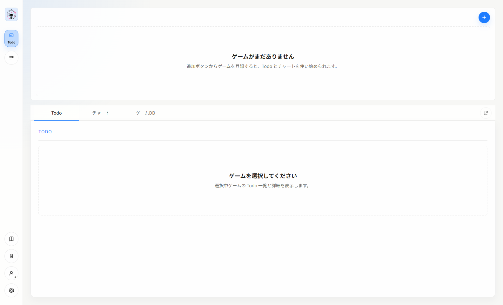
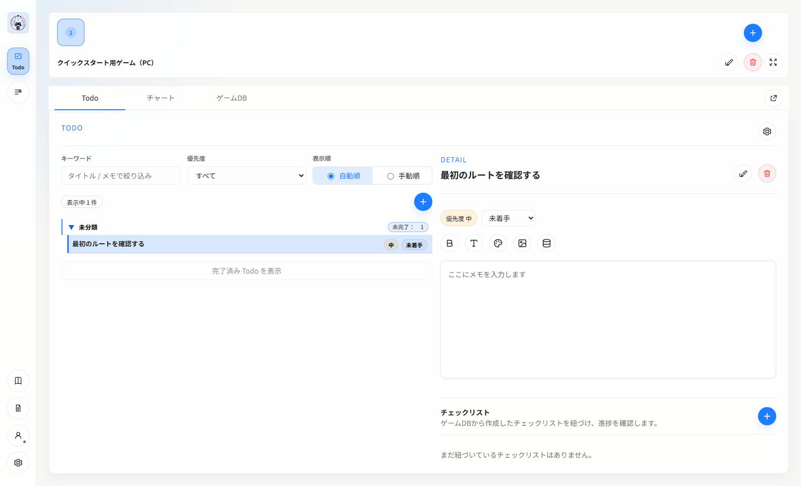
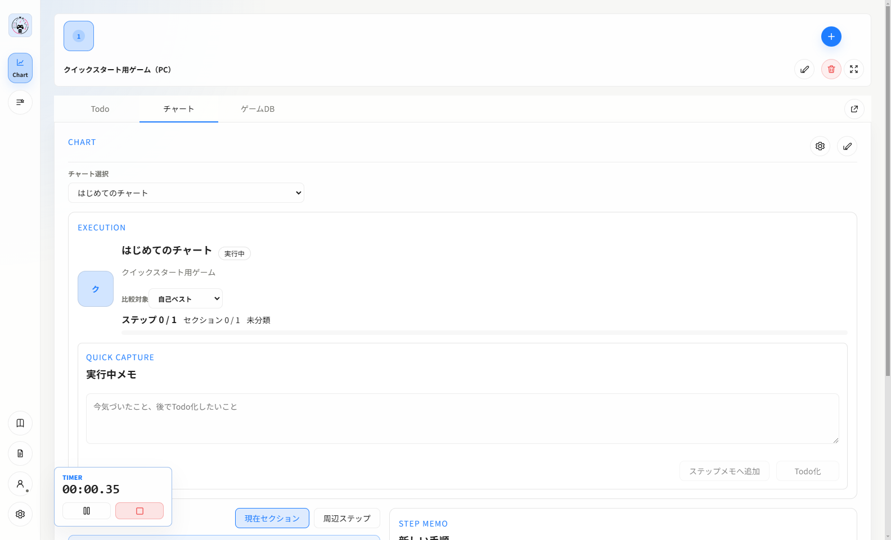

この手順だけで「インストール → 初回起動 → ゲーム作成 → Todo作成 → チャート実行」まで進められます。ログインは任意です。
1. インストールして起動する
-
公式案内ページの配布欄から最新の
Y-sRoute-Setup-{version}-x64.exeをダウンロードします。 -
PowerShellで
Get-FileHash .\Y-sRoute-Setup-{version}-x64.exe -Algorithm SHA256を実行し、公開されているSHA-256と一致することを確認します。 - インストーラーを開き、画面に従って利用者単位でインストールします。
-
GitHub版は署名なしです。SmartScreenが表示された場合は、配布元URLとSHA-256を確認できた場合だけ
詳細情報、実行の順に選択します。 -
スタートメニューまたはデスクトップの
Y'sRouteを起動します。

1 22. ゲームとTodoを作成する
-
画面上部のゲーム欄にある
＋（ゲームを追加）を押します。 -
ゲーム追加でゲーム名を入力し、追加を押します。 -
Todoタブを開き、Todo一覧の＋（Todo を追加）を押します。 -
タイトルを入力し、必要に応じて詳細、ステータス、優先度、セクションを設定して
追加を押します。

1 2 33. チャートを作成して実行する
-
チャートタブを開き、チャート選択欄の＋（新規チャート）を押します。 -
チャート名と既定実行モードを設定し、
追加を押します。 - 手順一覧から1つ以上の手順を追加します。
-
実行モードを選び、チャート開始を押します。 - 各手順を記録して最後まで進めます。

1 2 3次に読む項目
ユーザーマニュアルでは、ログイン、ゲームDB、OBS、更新、アンインストール、バックアップと復元を説明しています。